Notebook · Maxwell's Demon
The Physics
These are the notebook pages from inside Maxwell's Demon, exactly as they appear in the game.
The Physics
A laboratory notebook kept beside the apparatus. Each page covers one idea: what is really known, a source to check it against, and a clearly labelled note of how the game models it.
- Maxwell's demon p. 1
- Temperature is motion p. 2
- Sticking, and leaving p. 3
- Why the wall heats the atom p. 4
- Atoms bumping into atoms p. 5
- What "vacuum" means p. 6
- The atom in the picture p. 7
- The elements and their masses p. 8
- Sorting, and the entropy it removes p. 9
- Shannon's bit p. 10
- Measuring versus erasing p. 11
- Pressure in the game p. 12
- Gravity, and why the lab is in orbit p. 13
- The spread of speeds p. 14
- When atoms become waves p. 15
- Cooling with light p. 16
- Traps, and cooling by evaporation p. 17
- Bose–Einstein condensates p. 18
- Escaping through a small hole p. 19
- The second law and the arrow of time p. 20
- Absolute zero and the third law p. 21
- Carnot's engine, and the demon p. 22
- Brownian motion p. 23
- How the game knows a millimetre p. 24
- Walls that trade heat: Maxwell's 1879 model p. 25
- Mixing, and Gibbs's paradox p. 26
- Real demons p. 27
- Moving walls and pistons p. 28
Maxwell's demon
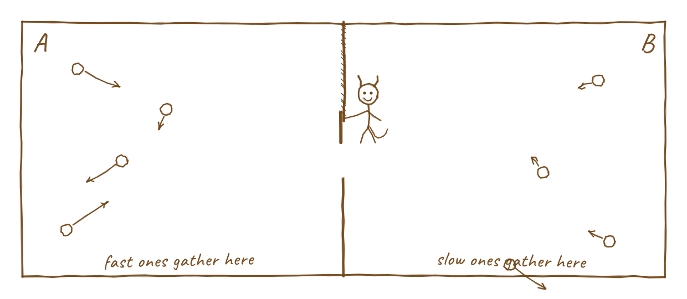
In a letter to his friend Peter Guthrie Tait dated 11 December 1867, James Clerk Maxwell imagined two vessels of gas joined by a small hole with a sliding shutter. A "finite being" who can see every molecule opens the shutter only for fast molecules going one way and slow ones going the other. The hot side gets hotter and the cold side colder, apparently without any work being done. That flatly contradicts the second law of thermodynamics.
Maxwell never called it a demon. William Thomson (later Lord Kelvin) did, in Nature in 1874, and the name stuck.
Why it doesn't win. In 1929 Leo Szilard boiled the puzzle down to a single molecule and showed that the demon's information is the crux. In 1961 Rolf Landauer showed that erasing one bit of information must release at least kBT ln 2 of heat. In 1982 Charles Bennett put the two together. Measuring can, in principle, be free. But the demon's memory fills up, and wiping it clean pays back at least all the entropy the demon removed. The second law survives, and the demon's notebook is the bill. Landauer's bound was confirmed in a 2012 experiment.
And you? In the Trap you are a demon with a paddle guarding the only door. In the Sorting mode you are Maxwell's own demon, working his trapdoor (pages 9 to 11).
cf. Maxwell to Tait, 11 Dec. 1867 (Cambridge Digital Library, PH-CAVENDISH-P-00092); E. Lutz & S. Ciliberto, "Information: From Maxwell's demon to Landauer's eraser", Physics Today 68(9), 30 (2015); A. Bérut et al., Nature 483, 187 (2012).
Margin note: the experiment this notebook belongs to is playable in your browser.
Temperature is motion
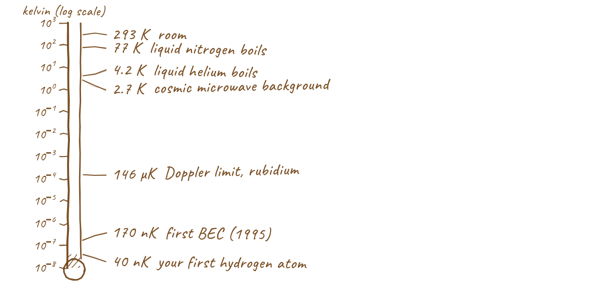
For a gas, temperature measures how hard its atoms are jiggling. For atoms that only fly about (no spinning or vibrating to worry about), the average kinetic energy is ½m⟨v²⟩ = (3/2)kBT. So T = m⟨v²⟩ / (3kB). Here kB = 1.380649 × 10−23 J/K is the Boltzmann constant, an exact number since the SI was redefined in 2019.
By that formula, a hydrogen atom at room temperature (293 K) has a root-mean-square speed of about 2.7 km/s. At 40 nK, where your first atom starts, it is about 3.1 cm/s. (1 nK = 10−9 K; 1 µK = 10−6 K.)
Real labs get there with laser cooling (Nobel Prize 1997: Chu, Cohen-Tannoudji and Phillips), which brings atoms down to microkelvins. On 5 June 1995 a JILA team led by Eric Cornell and Carl Wieman cooled rubidium-87 further, by evaporation, until a Bose–Einstein condensate appeared near 170 nK. Wolfgang Ketterle's MIT group made one from sodium a few months later, and the three shared the 2001 Nobel Prize.
cf. NIST CODATA, "Boltzmann constant" (physics.nist.gov/cuu); M. H. Anderson et al., Science 269, 198 (1995); The Nobel Prize in Physics 2001, popular information (nobelprize.org); D. A. Steck, Rubidium 87 D Line Data (steck.us/alkalidata).
Sticking, and leaving
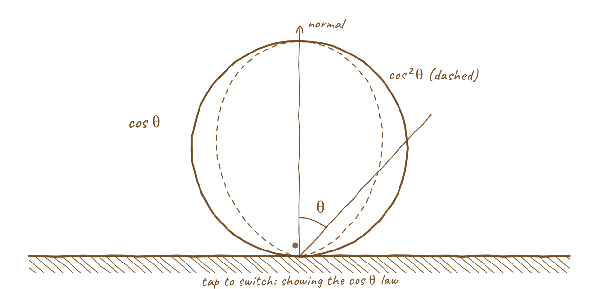
When an atom hits a surface it often doesn't bounce at all. Weak van der Waals forces can hold it there: it is adsorbed. It rattles in place until a random jolt from the vibrating surface kicks it loose. That is desorption.
The escape has the same chance at every instant, so the time spent on the surface follows an exponential distribution. Its average, the residence time, grows steeply as the binding gets stronger or the surface colder: τ = τ₀ exp(E / kBT), with τ₀ typically about 10−13 s (Frenkel's equation).
Which way does it leave? An atom that has fully "forgotten" how it arrived leaves in a random direction, but not in every direction equally. In three dimensions, the number leaving per unit solid angle is proportional to cos θ, with θ measured from the surface normal. This is Knudsen's cosine law, the same rule as Lambert's law for light from a matte surface. The game is flat, so it uses the 2D version: the exit angle has probability density ∝ cos θ. Settings offers cos² θ for comparison.
cf. J. M. Lafferty (ed.), Foundations of Vacuum Science and Technology (Wiley, 1998), ch. 1; Surface Science (Nix), §2.6 "The Desorption Process" (chem.libretexts.org); Wikipedia, "Lambert's cosine law".
Why the wall heats the atom
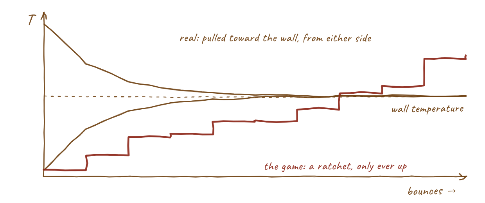
A wall is not still: its atoms vibrate at the wall's own temperature. An atom that sits on it long enough trades energy with those vibrations until it shares that temperature. When it leaves, it carries the wall's temperature away, whatever it arrived with.
In 1911 Martin Knudsen measured how complete this trade is with the accommodation coefficient α = (Eout − Ein) / (Ewall − Ein). α = 1 means the atom leaves fully at the wall temperature; α = 0 means it keeps its own energy. A cold atom on a warm wall heats up, and a hot atom on a cold wall cools down. On average the atom is pulled toward the wall temperature, not pushed past it.
That is why real ultracold atoms never touch anything. Lab walls are at room temperature, or a few kelvin inside a cryostat. One fully accommodating touch would make a 40 nK atom about 1 × 108 times hotter in a 4 K cryostat, and about 7 × 109 times hotter at room temperature. Instead, atoms are held by magnetic fields or beams of light in the middle of the vacuum.
cf. M. Knudsen, "Die molekulare Wärmeleitung der Gase und der Akkommodationskoeffizient", Ann. Phys. 339(4), 593–656 (1911); Thermopedia, "Accommodation coefficient" (thermopedia.com).
Atoms bumping into atoms
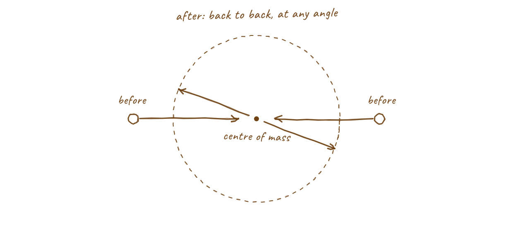
At everyday temperatures, two atoms collide a bit like billiard balls. Ultracold, quantum mechanics takes over. Each atom behaves as a wave with de Broglie wavelength λ = h / (mv). For hydrogen at 40 nK, where the game starts it, moving at the matching root-mean-square speed, that is about 13 µm, thousands of times larger than the nanometre-scale reach of the forces between atoms. (Other pages quote the thermal wavelength h / √(2π m kBT), the standard yardstick for a whole gas. It is a different definition, smaller by √(2π/3) ≈ 1.45: about 8.7 µm at the same temperature. Both are right; they answer different questions.)
When the wave is that much bigger than its target, only the simplest, perfectly round scattering wave survives: the s-wave (zero angular momentum). An s-wave has no favourite direction. So, seen from the pair's centre of mass, the atoms fly apart at a completely random angle. Momentum and energy are still conserved: the centre of mass carries on as before and the relative speed is unchanged. Only the direction is new.
The whole collision boils down to one number, the scattering length a. At low energy two different (distinguishable) atoms have cross-section σ = 4πa². Two identical bosons get double, 8πa², because their waves interfere constructively. At higher energy the unitarity limit caps it: for identical bosons σ = 8πa² / (1 + k²a²). Scattering lengths are quoted in Bohr radii (a₀ ≈ 0.053 nm): about 1.2–1.3 a₀ for spin-polarised hydrogen and about 100 a₀ for rubidium-87.
These collisions are what make evaporative cooling work: they keep re-sharing energy among the atoms left behind after the hottest ones are let go. That is how the first condensates were made in 1995.
The fermion caveat. Identical fermions in the same spin state cannot scatter in the s-wave at all. Their low-energy cross-section drops to zero, which is why such gases are hard to cool by evaporation.
cf. C. J. Pethick & H. Smith, Bose–Einstein Condensation in Dilute Gases, 2nd ed. (Cambridge Univ. Press, 2008), ch. 5; Wikipedia, "Scattering length".
What "vacuum" means
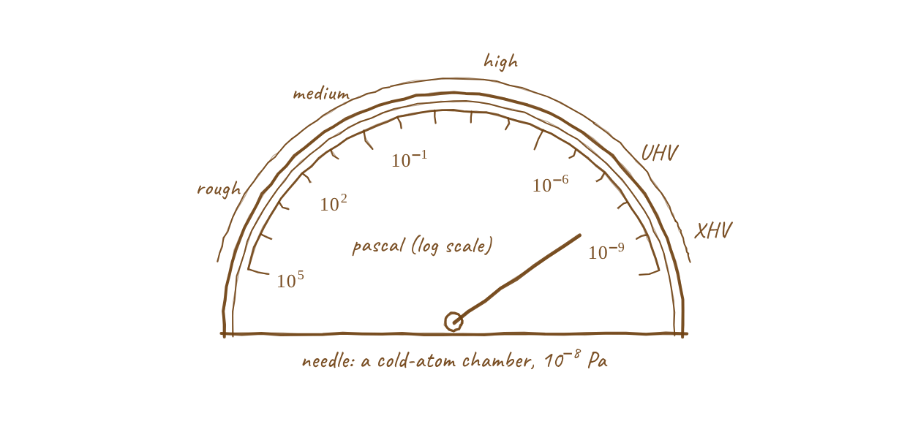
Pressure is the push of gas atoms drumming on a wall. For an ideal gas p = n kBT, so at a fixed temperature pressure simply counts atoms per volume.
Air at sea level is about 101 kPa: roughly 2.5 × 1025 molecules in every cubic metre at room temperature. (How empty the game's own chambers are, and how that compares with space, is on page 12.) In the 1650s Otto von Guericke built one of the first air pumps. He showed that two hemispheres held together only by the air outside them could not be pulled apart by teams of horses.
Ultra-high vacuum (UHV) means 10−6 down to 10−9 Pa, and extreme-high vacuum (XHV) anything below 10−9 Pa (ISO 3529-1:2019; some fields draw the UHV line at 10−7 Pa, and some authors put XHV below 10−10 Pa). Even at 10−8 Pa, a 10-litre chamber still holds about 25 billion molecules. They just rarely meet: at 10−7 Pa a molecule flies tens of kilometres, on average, between collisions with another gas molecule. Cold-atom experiments run at UHV because nearly every hit from a stray room-temperature molecule knocks an atom out of its trap.
cf. Wikipedia, "Vacuum" (ISO 3529-1:2019 ranges) and "Ultra-high vacuum"; Wikipedia, "Magdeburg hemispheres"; Lafferty (1998), ch. 1.
The atom in the picture
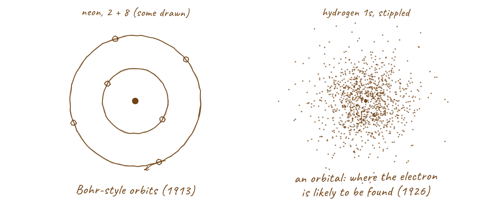
Our atoms are drawn in the style of Ernest Rutherford and Niels Bohr. In 1911 Rutherford explained the Geiger–Marsden scattering experiments with a tiny, heavy, positive nucleus at the centre of the atom. In 1913 Bohr put the electrons on fixed orbits around it.
What the picture gets right. There is a nucleus, and it is tiny: about 10−15 to 10−14 m across, inside an atom about 10−10 m across. Electrons do come in shells, and the way the shells fill builds the periodic table.
What it gets wrong. Electrons don't orbit like planets. A classical orbiting electron would radiate away its energy and spiral into the nucleus in about 10−11 s. Quantum mechanics (Schrödinger, 1926) replaces orbits with orbitals: clouds giving the probability of finding the electron. Our swirling trails are decoration.
cf. Wikipedia, "Rutherford model", "Bohr model" and "Atomic orbital"; K. T. McDonald, classical orbit-decay example (kirkmcd.princeton.edu/examples/orbitdecay.pdf).
The elements and their masses
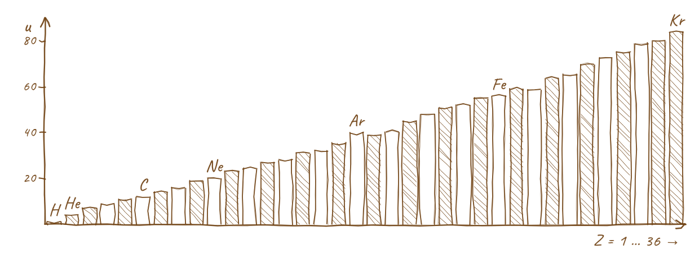
Dmitri Mendeleev published his periodic table in 1869. The game's 36 elements run from hydrogen (Z = 1) to krypton (Z = 36), the end of the table's fourth row.
Masses are in daltons (unified atomic mass units). 1 u is one twelfth of the mass of a carbon-12 atom: 1.66053906892 × 10−27 kg (CODATA 2022). The game uses IUPAC standard atomic weights, such as hydrogen 1.008, helium 4.0026 and krypton 83.798. These are averages over each element's natural isotopes. Chlorine's 35.45, for example, mixes about three-quarters chlorine-35 with one-quarter chlorine-37.
Mass matters for speed. At the same temperature, the root-mean-square speed goes as 1/√m, so krypton moves about 9 times slower than hydrogen. The game does it the other way round. Every element starts at the same speed (about 3.1 cm/s), so heavier atoms start hotter: krypton at about 3.3 µK, 83 times hydrogen's 40 nK (their mass ratio).
cf. IUPAC CIAAW, "Standard atomic weights" (ciaaw.org); NIST CODATA 2022, "atomic mass constant" (physics.nist.gov/cuu); Wikipedia, "Periodic table".
Sorting, and the entropy it removes
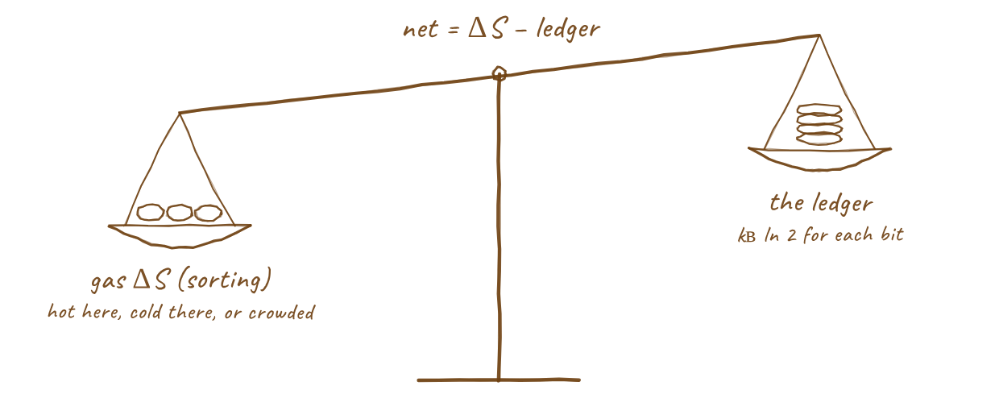
Entropy counts the ways. Boltzmann's idea, in Planck's notation S = kB ln W, is carved on Boltzmann's grave in Vienna: the more microscopic arrangements W that look the same from outside, the higher the entropy. A gas whose fast and slow atoms are mixed evenly through both chambers has the most ways, so it has the most entropy.
For an ideal gas, Otto Sackur and Hugo Tetrode (1911–1912) turned this into a formula. In the game's flat world it reads S = N kB [ ln(A / (N λ²)) + 2 ], with N atoms in area A and λ = h / √(2π m kBT) the thermal de Broglie wavelength. (In three dimensions the 2 becomes 5/2 and A becomes a volume.) For a mixture, each element gets its own term with its own N and λ. Each chamber's temperature comes from its atoms' mean kinetic energy: in 2D, ⟨KE⟩ = kBT per atom.
For hydrogen at the Sorting mode's standard 60 nK (a 2D temperature, the same speeds as 40 nK in the 3D convention), λ is about 7 µm, and each atom carries about 16 to 18 kB of entropy (the chamber's real area, and so this number, depends on your screen; the score only uses differences, which don't). There are two ways to lower the total. Sort by speed: with the energy fixed, a hot chamber plus a cold one has less entropy than two warm ones. Putting the fastest 50 of 100 hydrogen atoms in A and the slowest 50 in B removes about 33 kB. Sort by number: crowding atoms onto one side also lowers S. All 100 in one chamber at the same temperature removes N kB ln 2 ≈ 69 kB. The score counts both.
A hot gas and a cold one. The Sorting box starts as an even mixture of two gases of the same atoms: half at a cold temperature Tc and half at a hot Th, each with its own Maxwell–Boltzmann spread of speeds. The spread r = Th/Tc is how much order there is to harvest. At fixed N and A the entropy depends on temperature only through N kB ln T, so separating them perfectly (hot in one chamber, cold in the other) removes N kB ln[(1 + r)/(2√r)]. For 100 hydrogen atoms at r = 10 that is 100 ln(11/2√10) ≈ 55 kB; at r = 1 it is nothing. The mean temperature only sets how fast everything moves; it drops out of the formula. Collisions slowly merge the two gases into one (watch the speed histograms in each chamber), so the early seconds are worth the most.
With only 100 atoms, a chamber's temperature is a statistical estimate. For 50 atoms it wobbles by about ±14 % (T/√N). Even with no demon and the door left open, ΔS drifts by a kB or so (about ±1.4 kB in the long run) as atoms wander through at random.
The ledger. Each time you open the door, the demon has made a decision and must record it: one bit. Wiping that bit later costs at least kB ln 2 ≈ 0.69 kB = 9.57 × 10−24 J/K (page 11). Your score is the net: the gas's ΔS minus the ledger. It can go negative.
cf. O. Sackur, Ann. Phys. (1911, 1912); H. Tetrode, Ann. Phys. (1912); R. K. Pathria & P. D. Beale, Statistical Mechanics, 3rd ed. (Academic Press, 2011), ch. 3 (ideal gas, Gibbs paradox); this game's src/entropy.js (the 2D derivation, step by step).
Shannon's bit
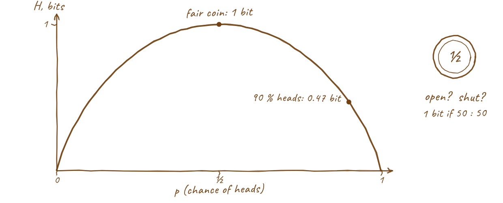
In 1948 Claude Shannon, at Bell Labs, asked how to measure information. His answer: by surprise. Learning the result of a fair coin toss gives you exactly one bit (binary digit), a word Shannon credited to his colleague John Tukey.
If the possible outcomes have chances p₁, p₂, …, the average information per outcome is H = −Σ p log₂ p bits. A fair coin gives H = 1 bit. A two-headed coin gives 0: you knew already. A coin that lands heads 90 % of the time gives about 0.47 bit, because it rarely surprises you.
The demon's trapdoor is a coin of its own. Each time it decides "open" or "stay shut", it records a choice. If the two were equally likely, that record holds one bit.
Here is the bridge to physics. Gibbs's formula for thermodynamic entropy, S = −kB Σ p ln p, has the same shape as Shannon's. Only the logarithm's base and the constant differ. So one bit of missing information corresponds to kB ln 2 ≈ 9.57 × 10−24 J/K of entropy. That is the exchange rate the Sorting mode's ledger uses.
cf. C. E. Shannon, "A Mathematical Theory of Communication", Bell System Technical Journal 27, 379–423 and 623–656 (1948); T. M. Cover & J. A. Thomas, Elements of Information Theory, 2nd ed. (Wiley, 2006), ch. 2.
Measuring versus erasing
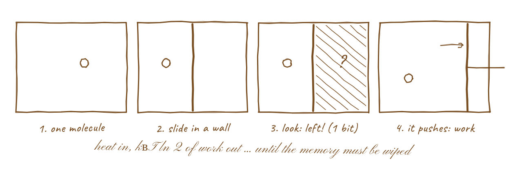
Szilard's engine (1929). Leo Szilard shrank Maxwell's demon to one molecule in a box at temperature T. Slide a wall into the middle. Look which side the molecule is on: that is one bit. Let the molecule push the wall like a piston as it expands back to fill the box. It draws heat from the surroundings and does kBT ln 2 of work. Repeat forever, and heat turns into work, which the second law forbids. Szilard concluded that the measurement itself must cost at least kB ln 2 of entropy.
Landauer's principle (1961). Rolf Landauer, at IBM, located the cost elsewhere: in forgetting. Resetting a memory bit to a standard state, whatever it held before, cannot be undone. It must release at least kBT ln 2 of heat, so the surroundings gain at least kB ln 2 of entropy. At room temperature that is about 3 × 10−21 J, a tiny amount.
Bennett's resolution (1982). Charles Bennett showed that a measurement can, in principle, be made reversibly, at no cost. The demon's real trouble is that its memory fills up. To keep working, it must erase, and erasing pays at least everything the demon gained. The second law survives.
The experiment (2012). Antoine Bérut and colleagues in Lyon used a single silica bead, 2 µm across, held by laser light in a double-well trap: a one-bit memory, left well or right well. They erased it by lowering the barrier and tilting the wells. The slower the erasure, the closer the average heat released came to the Landauer bound, kBT ln 2.
Your ledger. In the Sorting mode, every door opening adds kB ln 2 to the demon's ledger: the bit it must one day erase. Your score is what the gas lost minus what the ledger owes.
cf. L. Szilard, Z. Physik 53, 840–856 (1929); R. Landauer, IBM J. Res. Dev. 5, 183–191 (1961); C. H. Bennett, Int. J. Theor. Phys. 21, 905–940 (1982); A. Bérut et al., Nature 483, 187–189 (2012); T. Sagawa & M. Ueda, Phys. Rev. Lett. 100, 080403 (2008).
Pressure in the game
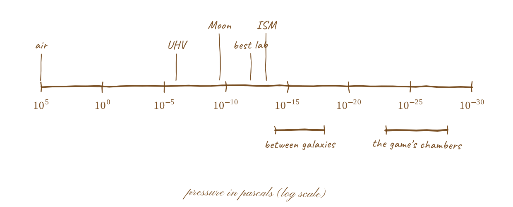
Pressure is drumming. Every atom that hits a wall and turns back pushes on it. Add up those pushes over a second and over a square metre and you have the pressure. Daniel Bernoulli worked this out in 1738. For an ideal gas the result is p = n kBT: the number of atoms per cubic metre, n, times kBT. Kinetic theory gives the same thing as p = n m⟨v²⟩/3, because the game's temperature label is T = m v²/(3kB) (page 2).
Why the game's numbers are absurdly small. The gauge under the chamber shows the pressure of the atoms in flight. There are very few of them and they are very cold, so both factors are tiny. One hydrogen atom at 40 nK, in a chamber 24 × 14 cm and 14 cm deep (a 24-inch monitor), gives p ≈ 1 × 10−28 Pa. A hundred atoms at the Sorting mode's 60 nK in a 24 × 12 × 12 cm box give about 2 × 10−26 Pa. On a phone the chamber is smaller and the numbers are a few times larger.
How that compares. The best vacuum measured directly with a gauge in a lab is about 10−12 Pa (Redhead, 1999); a cryogenic Penning trap at 4.2 K implied below about 7 × 10−15 Pa from how long its antiprotons survived (Gabrielse et al., 1990). Ultra-high vacuum starts at 10−6 Pa and extreme-high vacuum (XHV) below 10−9 Pa (ISO 3529-1:2019, the definition used throughout this notebook; Redhead and some other authors put XHV below 10−10 Pa). The Moon's thin night-time atmosphere is about 3 × 10−10 Pa, with about 2 × 105 particles per cm³ (NASA). The interstellar medium of our galaxy has p/kB ≈ 3800 K cm−3 on average (Jenkins and Tripp, 2011), about 5 × 10−14 Pa, with most measurements between 103 and 104.5 K cm−3 (roughly 10−14 to 4 × 10−13 Pa). The warm–hot gas between galaxies has nH ≈ 10−6 to 10−4 cm−3 at 105 to 107 K (Bertone et al., 2008): typically about 10−16 Pa, and roughly 10−18 to 10−14 Pa across those ranges (counting hydrogen nuclei only; the free electrons about double it). Averaged over the whole universe there is only about one quarter of a baryon per cubic metre (Planck 2018).
So the game's chambers are around 1015 times emptier than the best vacuum anyone has measured, and far emptier than intergalactic space.
With gravity on (Settings), the atoms crowd near the floor, so the density is not the same everywhere (page 13). The gauge then shows the mean pressure over the chamber, n̄ kBT with n̄ = N/V; it says "mean" when gravity is on. The floor pressure is higher.
cf. D. Bernoulli, Hydrodynamica (1738), sect. 10; P. A. Redhead, "Extreme high vacuum", CERN Accelerator School: Vacuum Technology, CERN 99-05 (1999); G. Gabrielse et al., Phys. Rev. Lett. 65, 1317 (1990); NASA NSSDC, Moon fact sheet (nssdc.gsfc.nasa.gov/planetary/factsheet/moonfact.html); E. B. Jenkins & T. M. Tripp, Astrophys. J. 734, 65 (2011); S. Bertone et al., Space Sci. Rev. 134, 295 (2008); Planck Collaboration, Astron. Astrophys. 641, A6 (2020).
Gravity, and why the lab is in orbit
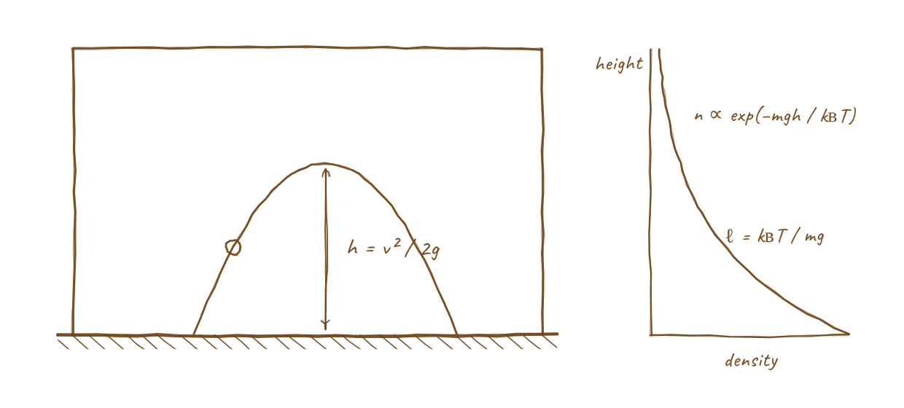
Ultracold atoms fall like stones. A hydrogen atom at 1 µK moves at about 0.16 m/s (root-mean-square). Gravity doesn't care how cold it is: dropped, it falls 25 cm in √(2h/g) ≈ 0.23 s under Earth's 9.81 m/s². To climb a height h, an atom needs v² = 2gh. To reach 25 cm, hydrogen needs about 2.2 m/s, a temperature of about 200 µK. The game's hydrogen atoms start at 40 nK, moving 3.1 cm/s: on Earth they would hop only about 50 µm.
So the game's chambers float in an orbiting laboratory, in microgravity. That is not fantasy. NASA's Cold Atom Lab was launched to the International Space Station on 21 May 2018 and made the first Bose–Einstein condensates in orbit that July (Aveline et al., 2020). The German MAIUS-1 sounding rocket made the first in space on 23 January 2017, during about six minutes of free fall (Becker et al., 2018). In Bremen, the QUANTUS team made one in a capsule falling 4.7 s down ZARM's 146 m drop tower (van Zoest et al., 2010). On the ground, magnetic or laser traps must hold the atoms up against gravity, and released atoms hit the bottom of the chamber within a fraction of a second.
Einstein's elevator. In free fall you cannot feel gravity: everything falls together. An orbiting station is falling around the Earth all the time, so inside it the atoms float. That is the equivalence principle in one line.
With gravity on (Settings: Moon 1.62, Mars 3.71, Earth 9.81 m/s²), every atom flies on an exact parabola between collisions. At nanokelvin temperatures they hop along the floor. In equilibrium the density falls off with height h as exp(−m g h / kBT), the barometric formula, with scale height ℓ = kBT/(m g). For hydrogen at 40 nK on Earth ℓ is only 34 µm. (Earth's air has ℓ ≈ 8.5 km and Mars's about 11 km, NASA NSSDC.)
Entropy under gravity. The Sorting score assumes, with no gravity, that each chamber's atoms are spread evenly. Under gravity they are not, and a gas piled at the floor is more ordered than an even one. In equilibrium the exact answer comes from the configurational integral Zy = ∫₀H exp(−m g y / kBT) dy = ℓ(1 − e−H/ℓ): the spatial entropy is N kB[ln(w Zy/N) + 1 + ⟨y⟩/ℓ] for a chamber w wide and H high, which becomes the usual N kB[ln(wH/N) + 1] when g → 0. A game is rarely in equilibrium, so the score measures the spatial part from where the atoms actually are: it cuts each chamber into 10 horizontal slabs and applies the usual formula slab by slab. The kinetic part (the temperature) is unchanged, and with gravity off the slabs are not used, so microgravity scores are exactly as before.
cf. NASA JPL, "Space Station Experiment Reaches Ultracold Milestone" (2018); D. C. Aveline et al., Nature 582, 193 (2020); D. Becker et al., Nature 562, 391 (2018); T. van Zoest et al., Science 328, 1540 (2010); ZARM, "How does the drop tower work?" (zarm.uni-bremen.de); NASA NSSDC Moon and Mars fact sheets (Mars: 3.69 m/s² at the equator to 3.73 at the poles); NASA Glenn PIMS, ISS acceleration environment (ntrs.nasa.gov 20120012936); R. K. Pathria & P. D. Beale, Statistical Mechanics, 3rd ed. (2011), ideal gas in an external field.
The spread of speeds
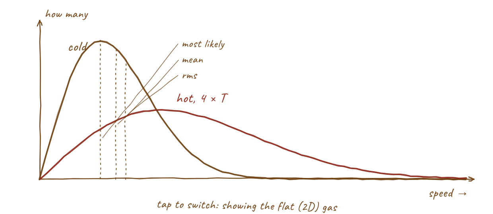
In a gas no two atoms move at quite the same speed. In 1860 James Clerk Maxwell worked out how the speeds are shared out in a gas at equilibrium, assuming only that motion along each direction is independent and that no direction is special. Ludwig Boltzmann put it on firmer ground from 1868 onward. The answer: each component of the velocity follows a bell curve (a Gaussian) whose width is set by kBT/m.
In a flat (2D) gas that gives a speed distribution f(v) = (mv / kBT) exp(−mv² / 2kBT). It starts at zero, because there are few ways to be nearly still and a whole ring of ways to move at speed v. It peaks at the most likely speed √(kBT/m) and trails off in a long tail. The mean speed is about 1.25 times the most likely speed and the rms speed √2 ≈ 1.41 times. A tidy 2D fact: the share of atoms faster than any speed v is exactly exp(−mv² / 2kBT). So about 1.8 % of atoms move faster than twice the rms speed.
In three dimensions the curve goes as v² exp(−mv² / 2kBT), and the most likely, mean and rms speeds are √(2kBT/m), √(8kBT/πm) and √(3kBT/m). Heat a gas and the hump slides right and flattens. Heavier atoms, at the same temperature, have a narrower, slower hump.
The law has been tested many times. In 1955 Robert Miller and Polykarp Kusch at Columbia sent beams of potassium and thallium atoms through a spinning, slotted speed selector. The measured distributions matched Maxwell's prediction closely, with the peak speeds within 0.5 %. (A beam leaking out of an oven over-represents fast atoms; see "Escaping through a small hole".)
cf. J. C. Maxwell, "Illustrations of the dynamical theory of gases", Phil. Mag. 19, 19–32 (1860); R. C. Miller & P. Kusch, "Velocity distributions in potassium and thallium atomic beams", Phys. Rev. 99, 1314 (1955); Pathria & Beale, Statistical Mechanics, 3rd ed. (2011).
Margin note: see this for yourself in Maxwell's Demon.
When atoms become waves
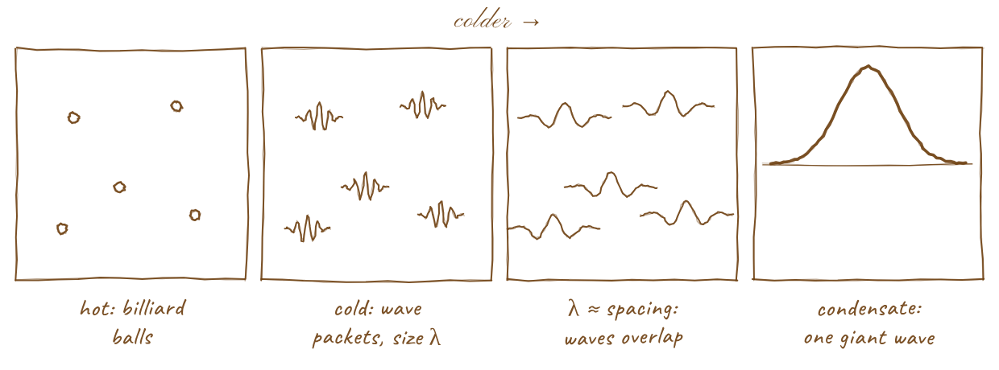
In his 1924 doctoral thesis, Louis de Broglie proposed that every particle has a wave, with wavelength λ = h / p, where p is its momentum and h = 6.62607015 × 10−34 J s is Planck's constant (exact since 2019). The idea was soon confirmed. Clinton Davisson and Lester Germer saw electrons diffract from a nickel crystal in 1927. Immanuel Estermann and Otto Stern diffracted helium atoms in 1930. In 1999 Anton Zeilinger's group in Vienna diffracted buckyballs, C₆₀ molecules of 60 carbon atoms each, whose wavelength was about 2.5 picometres.
For a gas the useful size is the thermal de Broglie wavelength, λ = h / √(2π m kBT). For hydrogen at room temperature it is about 0.1 nm, roughly the size of the atom itself and far smaller than the gaps between atoms, so the atoms behave like tiny billiard balls. Cool the gas and λ grows as 1/√T: about 1.7 µm for hydrogen at 1 µK, and about 8.7 µm at 40 nK, where the game starts it. (The page "Atoms bumping into atoms" quotes h/(mv) for a single atom at the root-mean-square speed, about 13 µm: a different definition, larger by √(2π/3) ≈ 1.45.)
Quantum behaviour takes over when the waves of neighbouring atoms overlap, that is, when the number of atoms in a cube of side λ (the phase-space density nλ³) approaches one. Einstein's theory says that identical bosons start to condense at nλ³ = 2.612. MIT's hydrogen condensate of 1998 appeared at about 50 µK and 1.8 × 1014 atoms per cm³. Put those numbers in and nλ³ comes out at about 2.7.
cf. L. de Broglie, Ann. Phys. (Paris) 3, 22 (1925) (the 1924 thesis); C. Davisson & L. H. Germer, Nature 119, 558 (1927); M. Arndt et al., "Wave–particle duality of C₆₀ molecules", Nature 401, 680 (1999); D. G. Fried et al., Phys. Rev. Lett. 81, 3811 (1998); Pethick & Smith (2008), ch. 2.
Cooling with light
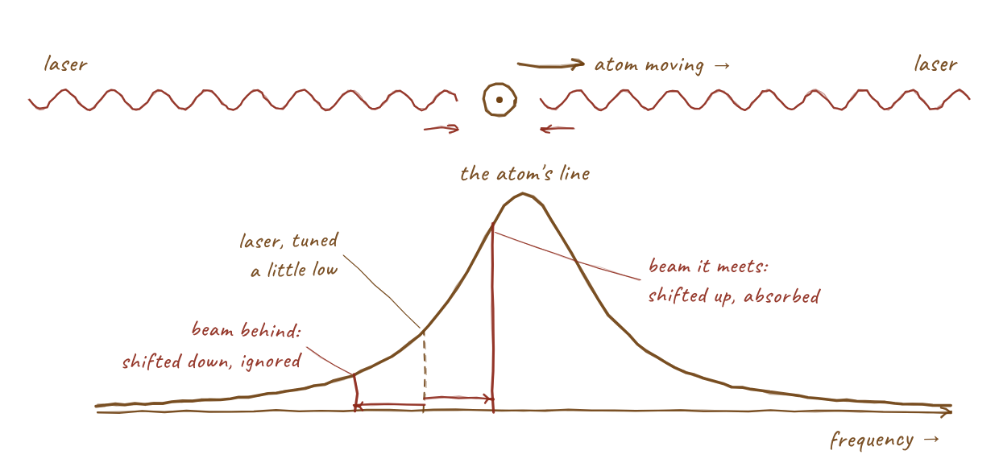
Light carries momentum, h/λ per photon. When a rubidium-87 atom absorbs one photon of its 780 nm light, its speed changes by about 5.9 mm/s. It then re-emits the photon in a random direction, so the emission kicks average out and the absorption kicks add up. Stopping a rubidium atom moving at 300 m/s takes some 50,000 photons. But an atom can scatter up to about 19 million photons a second, so the slowing can reach about 105 m/s², ten thousand times Earth's gravity.
The trick. In 1975 Theodor Hänsch and Arthur Schawlow proposed it for gases, and David Wineland and Hans Dehmelt for trapped ions. Tune the laser slightly below the atom's resonance. An atom moving toward the beam sees the light Doppler-shifted up, into resonance, and absorbs strongly. An atom moving away sees it shifted further down and hardly absorbs at all. With beams from both sides along every axis, the atom always feels a push against its motion, like friction. Ions were cooled this way in 1978 (Wineland, Drullinger and Walls with magnesium; Neuhauser, Hohenstatt, Toschek and Dehmelt with barium). In 1985 Steven Chu's group at Bell Labs crossed six beams on sodium atoms and called the result "optical molasses": about 240 µK.
The limits. The random emission kicks heat the atom too. The balance is the Doppler limit, TD = ħΓ / 2kB, where Γ is the natural width of the line: about 240 µK for sodium and 146 µK for rubidium-87. Then, in 1988, William Phillips's group at the US National Bureau of Standards measured sodium at 43 µK, far below the limit. Jean Dalibard and Claude Cohen-Tannoudji soon explained it with "Sisyphus" cooling, which relies on light whose polarisation changes across the beams and on the atom's several internal sublevels. Chu, Cohen-Tannoudji and Phillips shared the 1997 Nobel Prize.
Hydrogen is hard. Its cooling line is Lyman-α at 121.6 nm, deep in the vacuum ultraviolet, where lasers are feeble. Each photon kicks a hydrogen atom by about 3.3 m/s. In 1993 Jook Walraven's group in Amsterdam laser-cooled magnetically trapped hydrogen to 8 mK.
cf. T. W. Hänsch & A. L. Schawlow, Opt. Commun. 13, 68 (1975); S. Chu et al., Phys. Rev. Lett. 55, 48 (1985); P. D. Lett et al., Phys. Rev. Lett. 61, 169 (1988); The Nobel Prize in Physics 1997, advanced information (nobelprize.org); D. A. Steck, Rubidium 87 D Line Data (steck.us/alkalidata); I. D. Setija et al., Phys. Rev. Lett. 70, 2257 (1993).
Traps, and cooling by evaporation
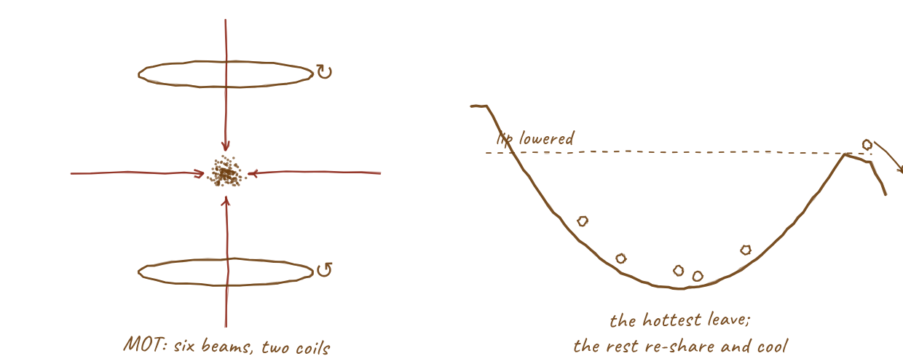
Molasses slows atoms but cannot hold them. In 1985 Alan Migdall, William Phillips, Harold Metcalf and colleagues held laser-cooled sodium atoms in a magnetic trap for the first time. An atom is a tiny magnet, and in the right internal state it is drawn toward the weakest point of a magnetic field.
In 1987 a Bell Labs and MIT team (Raab, Prentiss, Cable, Chu and Pritchard) combined light and magnetism in the magneto-optical trap, or MOT. A weak magnetic field from two coils with opposite currents, together with circularly polarised beams, makes the light push atoms toward the centre as well as slowing them. Their first MOT held up to 10 million sodium atoms for two minutes, below a millikelvin, in a speck under 0.5 mm across. It is still the first stage of almost every cold-atom experiment.
Evaporation. To go colder, let the hottest atoms escape. Harald Hess proposed it for trapped hydrogen in 1986. Hold the atoms in a trap with a "lip", then lower the lip. The most energetic atoms spill over, and the rest share out the remaining energy by colliding, settling at a lower temperature. An MIT and Bell Labs team cooled magnetically trapped hydrogen this way in 1988, from 38 mK to 3 mK. With radio waves that flip the spin of the hottest atoms, so the trap pushes them out instead of holding them, the alkali groups reached Bose–Einstein condensation in 1995. The price is atoms: most of the cloud is thrown away to leave a colder remainder.
cf. A. L. Migdall et al., Phys. Rev. Lett. 54, 2596 (1985); E. L. Raab et al., Phys. Rev. Lett. 59, 2631 (1987); H. F. Hess, Phys. Rev. B 34, 3476 (1986); N. Masuhara et al., Phys. Rev. Lett. 61, 935 (1988).
Bose–Einstein condensates
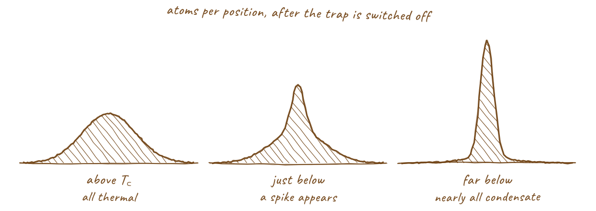
In 1924 Satyendra Nath Bose, in Dhaka, derived Planck's law of radiation by counting photons as truly indistinguishable. He sent the paper to Einstein, who translated it into German and had it published. Einstein then applied the same counting to atoms (1924–25), and found something new. Below a critical temperature, a large fraction of the atoms must pile into the single lowest-energy state. That pile is a Bose–Einstein condensate: thousands or millions of atoms acting as one wave.
The recipe. Each atom's wave has a size, the thermal de Broglie wavelength λ = h / √(2π m kBT). Condensation begins when the waves overlap enough. In a uniform ideal gas of identical bosons, the precise condition is that the phase-space density nλ³, the number of atoms in a cube of side λ, reaches 2.612. Every term points the same way:
- Colder. λ grows as 1/√T, so halving the temperature makes nλ³ almost three times larger (23/2 ≈ 2.8).
- Lighter. λ grows as 1/√m too. At the same density, hydrogen condenses at a temperature about 86 times higher than rubidium-87 (their mass ratio).
- Denser. nλ³ is proportional to n: pack twice as many atoms into the same space and you need less cold. Size counts twice over: the same atoms in a box M times smaller on every side are M³ times denser, and if they are also M² times colder, nλ³ grows M⁶ times.
In practice every route has the same two steps: crowd the atoms together and take energy away, usually by separating the hottest atoms from the rest (see "Traps, and cooling by evaporation").
The first ones. On 5 June 1995 Eric Cornell and Carl Wieman's team at JILA in Boulder saw about 2,000 rubidium-87 atoms condense at 170 nK. A few months later Wolfgang Ketterle's group at MIT reported sodium condensates of up to 500,000 atoms, which formed at about 2 µK. In 1998 Daniel Kleppner and Thomas Greytak's MIT group condensed hydrogen: about a billion atoms, near 50 µK. Being so light, hydrogen condenses warm. Cornell, Wieman and Ketterle shared the 2001 Nobel Prize. To see a condensate, switch off the trap and photograph the cloud's shadow a few milliseconds later. The thermal atoms spread into a broad hump, while the condensate stays a dense, sharp spike. In 1997 Ketterle's group overlapped two condensates and photographed interference fringes: each one is a single coherent wave.
Why gravity gets in the way. On Earth, a trap must hold the atoms up against their weight. Weaker, gentler traps would reach lower temperatures, but gravity empties a trap that is too weak. And once released, the cloud falls away within a fraction of a second. So cold-atom physicists went looking for weightlessness. In 2007 Bremen's QUANTUS team made a condensate inside a capsule falling down a drop tower. On 23 January 2017 the MAIUS-1 sounding rocket made the first condensate in space. Since 2018, NASA's Cold Atom Lab on the International Space Station has made rubidium condensates colder than a nanokelvin, in weak traps, and watched them expand freely for more than a second (see "Gravity, and why the lab is in orbit").
cf. S. N. Bose, Z. Phys. 26, 178 (1924); M. H. Anderson et al., Science 269, 198 (1995); K. B. Davis et al., Phys. Rev. Lett. 75, 3969 (1995); D. G. Fried et al., Phys. Rev. Lett. 81, 3811 (1998); M. R. Andrews et al., Science 275, 637 (1997); D. Becker et al., Nature 562, 391 (2018) (MAIUS-1); D. C. Aveline et al., Nature 582, 193 (2020) (Cold Atom Lab); Pethick & Smith (2008), ch. 1–2.
Escaping through a small hole
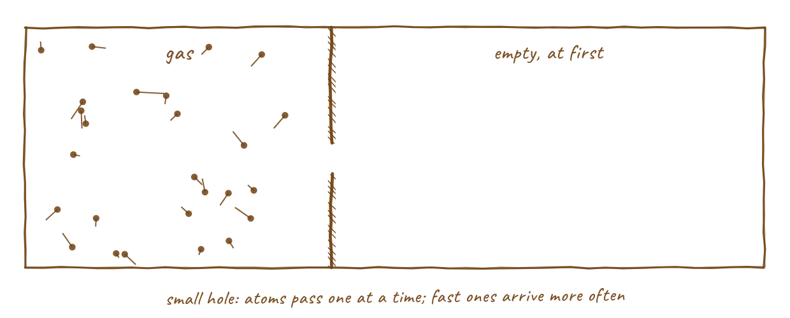
When a hole is much narrower than the distance an atom travels between collisions, atoms don't flow through it as a stream. They pass one at a time, whenever one happens to fly at the hole. This is effusion. In 1846 Thomas Graham found that a gas leaks through a tiny hole at a rate proportional to 1/√(molar mass): Graham's law. At the same temperature and density, hydrogen leaks out about 9 times faster than krypton.
Kinetic theory explains it. Lighter atoms move faster, and faster atoms reach the hole more often. Through a hole of area A in a 3D gas, ¼ n v̄ A atoms leave per second, with n the number density and v̄ the mean speed. In a flat gas, through a gap of width w, it is n v̄ w / π.
Because fast atoms reach the hole more often, the escaping atoms are hotter on average than the gas they leave: each carries 2kBT of energy in 3D, against 1.5kBT for an average atom inside. In 2D it is 1.5kBT against kBT. The leaking gas cools, and the beam carries a speed spread unlike the one inside the box. That is why atomic-beam ovens, like Miller and Kusch's, need this correction.
Uses. In the Manhattan Project, uranium was enriched by gaseous diffusion of uranium hexafluoride through porous barriers at Oak Ridge's K-25 plant. ²³⁵UF₆ is only about 1 % lighter than ²³⁸UF₆, so the ideal gain per stage is a factor of 1.0043, and the plant needed thousands of stages. A further twist: two chambers at different temperatures, joined by a tiny hole, settle not at equal pressure but with p₁/p₂ = √(T₁/T₂). Osborne Reynolds measured this thermal transpiration in 1879 and Martin Knudsen extended it in 1910.
The demon's door. An open trapdoor with no demon lets more fast atoms through each second than slow ones. But just as many fast atoms come back the other way, so on average it sorts nothing. Only a choice about which atoms to let through can sort.
cf. T. Graham, "On the motion of gases", Phil. Trans. R. Soc. 136, 573 (1846); F. Reif, Fundamentals of Statistical and Thermal Physics (McGraw-Hill, 1965), ch. 7 (effusion); Lafferty (1998), ch. 1; Wikipedia, "Thermal transpiration" and "K-25".
The second law and the arrow of time
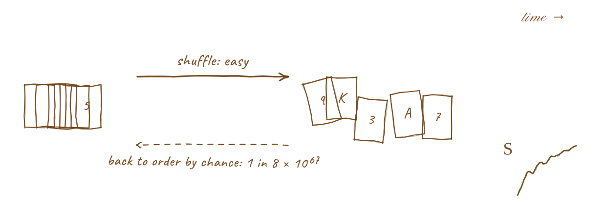
Three statements of one law. Rudolf Clausius, 1854: heat never passes from a colder body to a warmer one without some other change happening as well. William Thomson (Lord Kelvin), 1851: no engine can take heat from a single source and turn it entirely into work. In 1865 Clausius coined the word entropy and put it most simply: the entropy of an isolated system never decreases.
The puzzle. Newton's laws work just as well run backwards. So where does the one-way direction come from? In 1872 Boltzmann's H-theorem seemed to derive the rise of entropy from collisions. In 1876 Josef Loschmidt objected: reverse every velocity, and the same laws would make entropy fall. Boltzmann's answer was statistical. Disordered arrangements vastly outnumber ordered ones, so a system wandering at random almost always heads toward disorder. Find 100 atoms all on one side of a box at a random moment? The chance is 2−100, about 8 × 10−31. In his 1927 Gifford Lectures, Arthur Eddington named this one-way direction "time's arrow". Why the universe started in such an ordered, low-entropy state is still an open question.
Small systems. Because the law is statistical, small systems break it for short spells. The fluctuation theorem of Denis Evans and Debra Searles makes this precise: the odds of seeing entropy (strictly, the "dissipation") fall by an amount Σ, against rising by the same amount, are e−Σ/kB. In 2002 their group in Canberra dragged a microscopic bead through water with optical tweezers and watched exactly such entropy-consuming stretches over short times.
cf. R. Clausius, Ann. Phys. 93, 481 (1854) and 125, 353 (1865); L. Boltzmann, Wien. Ber. 66, 275 (1872); A. S. Eddington, The Nature of the Physical World (1928), ch. 4; D. J. Evans & D. J. Searles, Adv. Phys. 51, 1529 (2002); G. M. Wang et al., Phys. Rev. Lett. 89, 050601 (2002).
Absolute zero and the third law
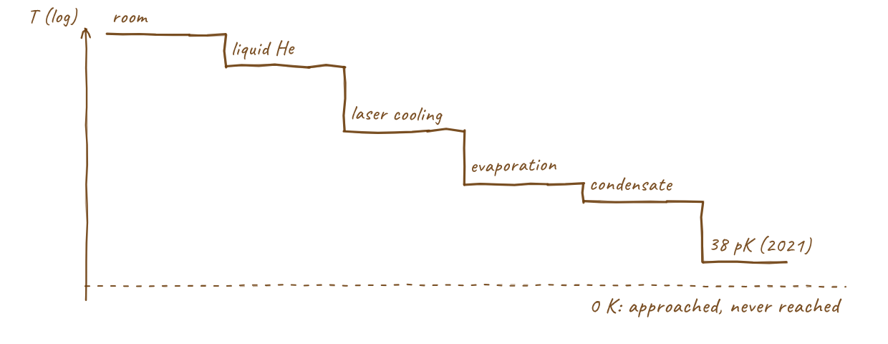
In 1848 William Thomson, later Lord Kelvin, argued for an absolute temperature scale, one that does not depend on any particular substance and starts from "infinite cold". In its modern form, absolute zero is −273.15 °C. Since 2019 the kelvin has been defined by fixing the Boltzmann constant, kB = 1.380649 × 10−23 J/K, exactly.
The third law. Walther Nernst's heat theorem (1906) says that as temperature falls toward zero, entropy changes in physical and chemical processes fade away. In 1912 he added the unattainability principle: no process can reach absolute zero in a finite number of steps. Each step gets you a fraction of the way, and there is always a fraction left. Nernst won the 1920 Nobel Prize in Chemistry. In 2017 Lluís Masanes and Jonathan Oppenheim gave a general proof: reaching zero would take infinite time, infinite work or an infinitely large reservoir.
How close? Space itself is bathed in the cosmic microwave background at 2.7 K. Labs go much lower. In 2021 a team in Bremen let a rubidium condensate fall down the 110 m drop tube of the city's drop tower, about 4.7 s of free fall, and used a magnetic "lens" to slow its spreading. The atoms' motion corresponded to just 38 picokelvin (3.8 × 10−11 K).
Not quite still. Even at absolute zero, quantum mechanics forbids perfect rest: there is always zero-point motion. It is why helium stays liquid down to absolute zero unless squeezed to about 2.5 MPa or more.
cf. W. Thomson, "On an absolute thermometric scale", Phil. Mag. 33, 313 (1848); BIPM, The International System of Units, 9th ed. (2019); L. Masanes & J. Oppenheim, Nat. Commun. 8, 14538 (2017); C. Deppner et al., Phys. Rev. Lett. 127, 100401 (2021); The Nobel Prize in Chemistry 1920 (nobelprize.org).
Carnot's engine, and the demon
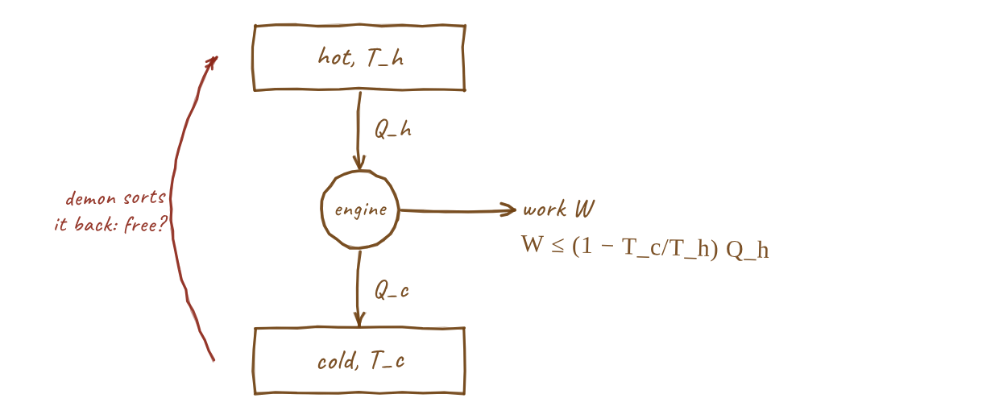
In 1824 a young French engineer, Sadi Carnot, published Reflections on the Motive Power of Fire. He asked how much work an engine can get from heat, and found that the best possible engine is a reversible one. Its performance depends only on the temperatures of the hot source and the cold sink, not on steam, air or any other working substance. In Kelvin's absolute temperatures, the most an engine can turn into work is the fraction η = 1 − Tc/Th of the heat it takes in. Between room temperature (300 K) and liquid nitrogen (77 K) that is at most 74 %.
Two chambers, one engine. If the hot and cold bodies are finite, the engine cools one and warms the other until they match. For two equal bodies of constant heat capacity C, a perfect engine leaves both at √(ThTc), not their average, and extracts W = C(√Th − √Tc)².
Why the demon matters. A demon that sorts a gas makes a hot reservoir and a cold one for free. Run Carnot's engine between them to get work; let the demon sort again; repeat. The net result is that heat from one surrounding temperature turns into work and nothing else. That is a perpetual-motion machine of the second kind, forbidden by Kelvin's statement of the second law. So either the demon pays somewhere, or the second law falls. Landauer and Bennett showed where it pays: in erasing its memory (see "Measuring versus erasing").
cf. S. Carnot, Réflexions sur la puissance motrice du feu (Paris, 1824); H. B. Callen, Thermodynamics and an Introduction to Thermostatistics, 2nd ed. (Wiley, 1985), ch. 4 (the maximum-work theorem); C. H. Bennett, Int. J. Theor. Phys. 21, 905 (1982).
Brownian motion
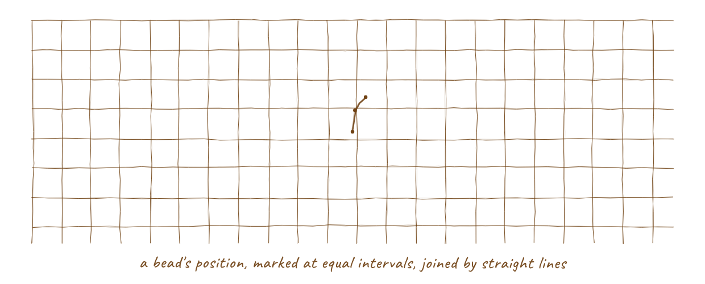
In June 1827 the botanist Robert Brown watched tiny particles released from pollen grains of the plant Clarkia pulchella, suspended in water, jiggling without end. Ground-up glass and rock dust did the same, so the motion was not life.
In 1905 Albert Einstein explained the jiggle as the visible result of countless invisible molecules kicking the particle from all sides, never quite in balance. He predicted something measurable: the particle does not travel steadily, it wanders. Its mean squared distance from the start grows in proportion to time, ⟨x²⟩ = 2Dt along each direction. For a sphere of radius r in a liquid of viscosity η, the diffusion coefficient is D = kBT / (6πηr). (William Sutherland published the same formula that year, and Marian Smoluchowski reached the theory independently in 1906.) For a bead 1 µm across in room-temperature water, D ≈ 4 × 10−13 m²/s. It strays about a micrometre in a second, but because distance grows only as √t, ten micrometres takes about a hundred seconds.
From 1908 Jean Perrin tracked such grains under the microscope, marking their positions at regular intervals. From the spread he worked out Avogadro's number, and the remaining doubters accepted that atoms are real. He won the 1926 Nobel Prize. Brownian beads are still a workhorse: both the 2002 test of the fluctuation theorem and the 2012 test of Landauer's principle used one.
cf. R. Brown, Phil. Mag. 4, 161 (1828); A. Einstein, Ann. Phys. 17, 549 (1905); J. Perrin, "Mouvement brownien et réalité moléculaire", Ann. Chim. Phys. 18, 5 (1909); The Nobel Prize in Physics 1926 (nobelprize.org).
How the game knows a millimetre
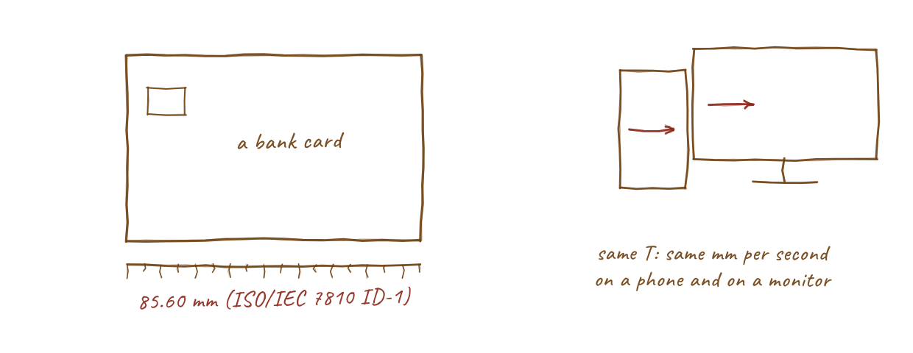
A temperature is a speed: T = m v² / (3kB) needs v in metres per second. But a game moves atoms in pixels per second. To turn one into the other, the game has to know how many millimetres one pixel covers on your screen. Then an atom at a given temperature crosses the same number of real millimetres each second on a phone and on a 27-inch monitor. (The chamber is bigger on a bigger screen, so atoms take longer to cross it: a deliberate trade, physics first.)
Where the number comes from. In the iPhone and iPad app, the game reads the model name and looks up Apple's published pixel density. An iPhone 15, for example, has 460 pixels per inch at 3 pixels per point, so 153.3 points per inch. In the Android app it asks the system for the panel's measured dots per inch and divides by the display density. In a web browser there is no reliable way to measure the screen, so the game assumes an average. Phones get 160 CSS pixels per inch: Android's "density-independent pixel" is defined as 1/160 inch, and iPhones sit between about 153 and 165. Tablets get 132, which is every full-size iPad. Monitors get 100: a 24-inch 1080p screen is about 92 and a 27-inch 1440p screen about 109. (CSS itself defines 96 pixels to the inch, but browsers do not measure it, so it is only a convention.)
Measuring it yourself. Settings → Calibrate screen asks you to match an outline to a bank card. Cards are made to an international standard, ISO/IEC 7810 ID-1, exactly 85.60 mm wide, so the card is a ruler most people carry. On this screen the game is using 0.23 mm per game pixel (scale assumes an average monitor (100 CSS px/in)).
Making the chamber smaller. Sorting has one more control, Chamber size. At ×M the real chamber is M times smaller than your screen, so one game pixel covers M times fewer millimetres. To keep the atoms crossing the screen at the same pace, every temperature is set M² times lower: the speed in pixels per second stays the same while the real speed drops M times, and temperature goes as speed squared. Everything the game shows is then the real value for the small chamber: its size, the temperatures (picokelvin at large M), the pressure. The assumed depth, the chamber's real height, shrinks M times as well, so the volume shrinks M³ times. Sorting's score does not change with M. The game's 2D entropy goes as ln(A/(Nλ²)), and λ² = h²/(2π m kBT), so it depends on area × temperature; both fall M² times, so every atom's entropy drops by the same 4 kB ln M at the start and at the end of a round, and the difference, your score, is untouched. The game's limits on this screen: the mean start temperature stays above about 37 pK, and M stays at or below ×137. Both limits scale a little with the screen, so the smallest chamber is about the same challenge on every device. They are the game's limits, not nature's, and they do not keep it above real records. On this screen the coldest start allowed is a hydrogen gas averaging about 38 pK, and with the widest temperature spread its cold group starts near 2.4 pK. The coldest gas ever measured reached an effective 38 pK (Bremen, 2021). So with the knob turned up, the magnified game runs colder than any real laboratory has managed. Your current setting is ×1: 0.23 mm per game pixel, where hydrogen's standard Sorting start is 60 nK.
cf. ISO/IEC 7810:2019, Identification cards: Physical characteristics (ID-1: 85.60 × 53.98 mm); C. Deppner et al., Phys. Rev. Lett. 127, 100401 (2021) (38 pK); Android Developers, "Support different pixel densities" (dp = 1/160 inch); Apple, iPhone 15 Technical Specifications (460 ppi); W3C, CSS Values and Units Module Level 3, §6.2 (1in = 96px); this game's src/scale.js.
Walls that trade heat: Maxwell's 1879 model
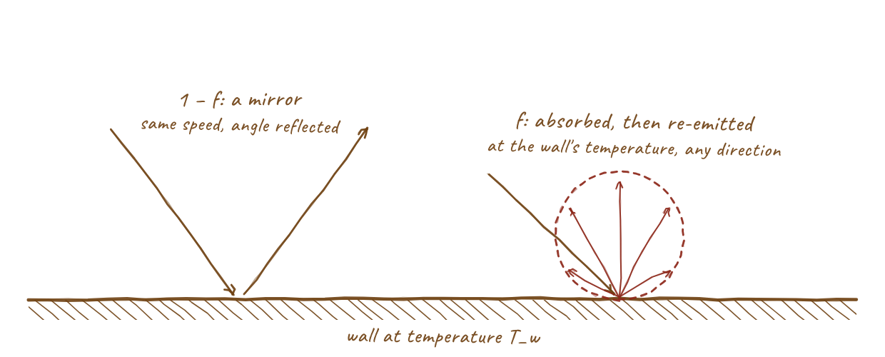
In 1879, the last year of his life, Maxwell published a long paper, "On stresses in rarified gases arising from inequalities of temperature". It was prompted by the puzzle of Crookes's light-mill (the radiometer), whose vanes spin in a near-vacuum when sunlight warms one face more than the other. To work out what happens near a surface, Maxwell needed a rule for how gas molecules leave a wall. His rule is still in use.
Maxwell's wall. Of the molecules that strike the wall, a fraction 1 − f bounce off like light from a mirror, with the same speed and the angle reflected. The rest, a fraction f, are absorbed and re-emitted as if they had come out of a gas at the wall's own temperature, in every direction. That makes f an accommodation coefficient, the same idea Knudsen later measured (see "Why the wall heats the atom"). With f = 0 the wall is perfectly "adiabatic": it never trades heat. With f = 1 it is perfectly "thermal". The mixed rule is detailed-balanced: a gas already at the wall's temperature stays exactly as it is, which any honest wall rule must satisfy.
The same paper predicted thermal creep, gas sliding along a surface from cold toward hot. That is the effect behind thermal transpiration (see "Escaping through a small hole"), which Osborne Reynolds was measuring in the same years.
cf. J. C. Maxwell, "On stresses in rarified gases arising from inequalities of temperature", Phil. Trans. R. Soc. 170, 231–256 (1879); M. Knudsen, Ann. Phys. 339, 593 (1911); this game's src/entropy.js (accommodatedSpeed).
Mixing, and Gibbs's paradox
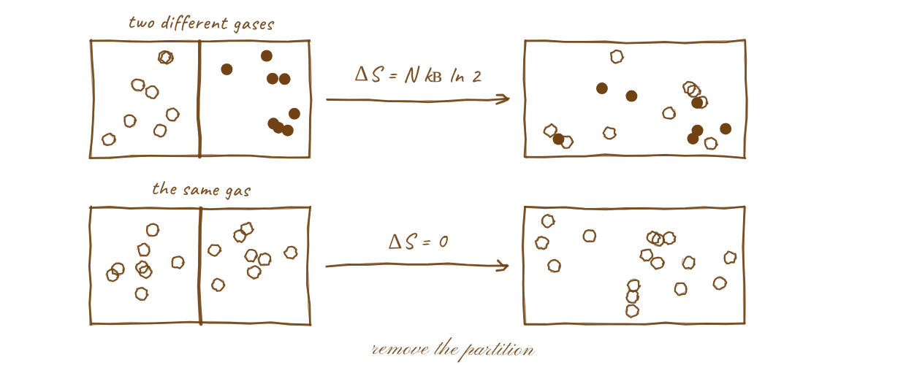
Put helium on one side of a partition and neon on the other, at the same temperature and pressure, and pull the partition out. The gases mix, and they never unmix on their own. The entropy has risen. For N atoms in all, half of each kind, it rises by N kB ln 2: each atom now has twice the room to be in.
Now do it with helium on both sides. Pull the partition, and nothing measurable happens. Slide it back, and you are where you started. The entropy change is zero.
The paradox. Josiah Willard Gibbs noticed this in 1876, in his great work On the Equilibrium of Heterogeneous Substances. The mixing entropy does not shrink as two gases become more alike. Helium-3 and helium-4, nearly identical, give exactly the same N kB ln 2 as helium and krypton. And then, for truly identical atoms, it jumps to zero. Gibbs's answer was practical. Different gases can, in principle, be separated again by some reversible means, a membrane that passes one and not the other, and that separation takes work. Identical portions cannot be told apart, so there is nothing to undo. Quantum mechanics later added the deep reason: identical atoms are truly indistinguishable. Swapping two of them is not a new arrangement, which is why the entropy formula divides by N! (see "Sorting, and the entropy it removes").
For the demon. In a gas of one element, swapping two atoms across the door changes nothing. Only moving the count or the energy from side to side counts. In a mixture, the score's formula gives each element its own term. So pushing one element to one side and another to the other side is real unmixing, and lowers the entropy.
cf. J. W. Gibbs, "On the Equilibrium of Heterogeneous Substances", Trans. Conn. Acad. 3, 108–248 and 343–524 (1875–78); Pathria & Beale (2011), §1.5 (the Gibbs paradox); this game's src/entropy.js (mixtureEntropy).
Real demons
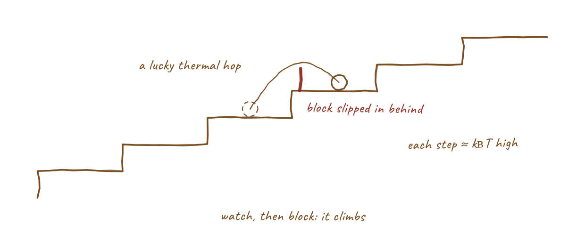
The rule. Landauer and Bennett showed that a demon cannot beat the second law, because it must one day pay to erase what it learned (see "Measuring versus erasing"). In 2008 Takahiro Sagawa and Masahito Ueda turned this into an exact budget for any machine that measures and then acts on what it saw. The work it can extract, beyond the ordinary limit set by free energy, is at most kBT × I, where I is the mutual information its measurement gained about the system, in natural units. A perfect yes-or-no measurement with even odds gives I = ln 2: one bit buys at most kBT ln 2 of work. A sloppy measurement buys less.
Demons in the laboratory. In 2010 Shoichi Toyabe, Masaki Sano and colleagues in Tokyo put a microscopic bead on a "spiral staircase" of electric potential, each step about kBT high. Left alone, it jitters and mostly falls down the stairs. They watched it with a camera. Whenever it hopped up a step by chance, they switched the potential so that it could not fall back. The bead climbed, gaining more free energy than the work done on it, and the bookkeeping matched Sagawa and Ueda's generalised Jarzynski equality. In 2014 Jonne Koski, Jukka Pekola and colleagues in Finland built Szilard's engine with a single electron, shared between two tiny metal islands at well below 1 K. Measure which island it is on, act on it, and heat flows in from the surroundings. Their best cycles came close to the ideal kBT ln 2 per bit, and the average was about 75 % of it.
Every one of these demons stays inside the law. The information is the fuel, and someone pays for it in the end.
cf. T. Sagawa & M. Ueda, Phys. Rev. Lett. 100, 080403 (2008) and 104, 090602 (2010); S. Toyabe et al., Nature Phys. 6, 988–992 (2010); J. V. Koski et al., Proc. Natl Acad. Sci. USA 111, 13786–13789 (2014).
Moving walls and pistons
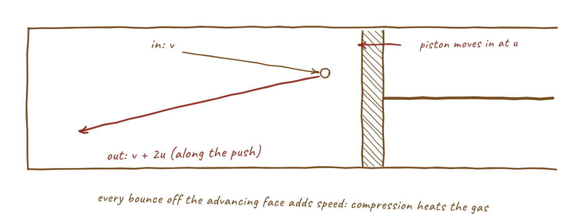
One bounce. Throw a ball at a wall that is coming toward you, and it comes back faster. For a molecule bouncing elastically off a heavy wall that moves at speed u, the reasoning is simple. In the wall's own frame the molecule just reverses its speed along the push. Back in the lab, that means its speed along the push rises from v to v + 2u if the wall advances into it, and drops to v − 2u if the wall is retreating. Sideways speed is unchanged.
Many bounces: a piston. Push a piston slowly into a gas and every molecule that strikes it gains a little. Together, those gains are exactly the work the piston does, W = −∫p dV. If no heat escapes, the gas warms: a monatomic gas obeys T V2/3 = constant in three dimensions, and T A = constant in a flat gas. That is why a bicycle pump gets hot, and why a fire piston, a sealed tube rammed shut by hand, can light tinder. Pull the piston out and the gas cools by the same rule.
Cosmic pistons. In 1949 Enrico Fermi proposed that cosmic rays gain their enormous energies the same way, by bouncing again and again off moving magnetic clouds in space. Head-on collisions slightly outnumber overtaking ones, so on average the particles speed up. Fermi acceleration, now mostly at the shock waves of supernova remnants, is still the leading explanation.
cf. E. Fermi, "On the origin of the cosmic radiation", Phys. Rev. 75, 1169–1174 (1949); F. Reif, Fundamentals of Statistical and Thermal Physics (McGraw-Hill, 1965), ch. 5 (adiabatic processes); Callen (1985), ch. 4; this game's src/game.js (desorb).
Margin note: read more about Maxwell's Demon, or try it now.